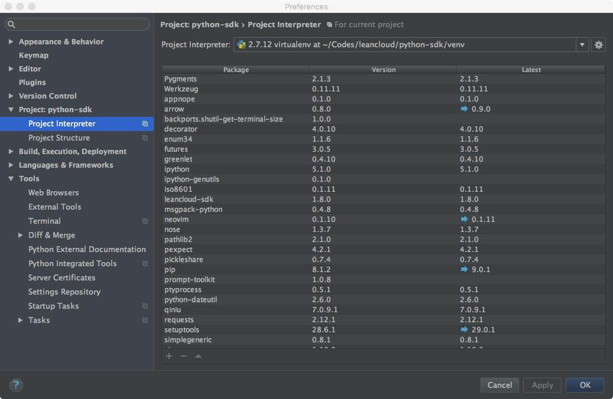
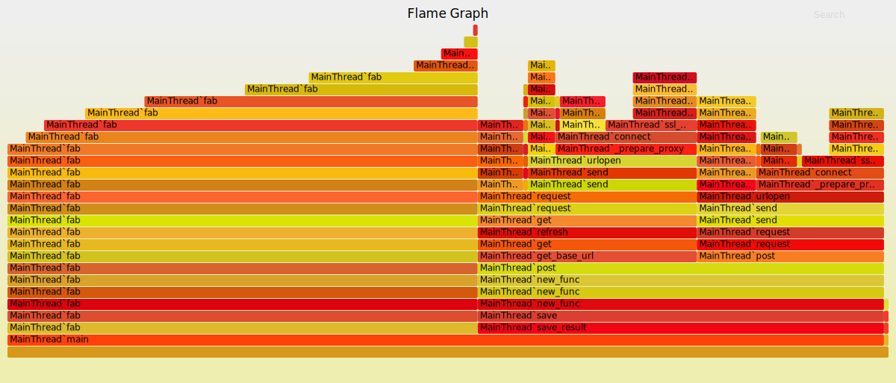

class: center, middle, inverse # Python Dev G.red[oo]dness .footnote[2016.11.29] --- class: center, middle, inverse # asaka @ .red[LeanCloud] --- class: center, middle, inverse # 环境搭建 --- .left-column[ ## Python ### - macOS ] .right-column[ - 不要使用系统自带 Python - 版本较老 - 全局安装依赖，可能会破坏系统自带工具依赖版本 - 不推荐官网下载 pkg 进行安装 - 难以维护，容易产生冲突 - 推荐使用 [homebrew](http://brew.sh) 安装 Python - 对于需要针对多个不同版本 Python 开发的用户，推荐使用 [pyenv](https://github.com/yyuu/pyenv) ] --- .left-column[ ## Python ### - macOS ### - Windows ] .right-column[ - 比较推荐 - Bash on Ubuntu on Windows (win10 only) - Cygwin - 相对容易安装原生扩展模块 ] --- class: center, middle, inverse ## 务必确保 .red[pip / easy_install / python ] ## 指向的是.red[同一套] Python 环境 --- .left-column[ ## 依赖 ### - virtualenv ] .right-column[ 用来隔离依赖，防止不同项目之间依赖冲突 - tips - 在项目根目录下的 venv 目录创建 virtualenv - 使用 `--no-site-packages` 参数创建 virtualenv，防止与全局依赖冲突 - 可以使用 `--python=/usr/local/bin/python3.5` 指定创建的 virtualenv 使用的 Python 环境 - alternates - [python3 -m venv](https://docs.python.org/3/library/venv.html) - [buildout](http://www.buildout.org/en/latest/) .footnote[.red[*] 请务必使用] ] --- .left-column[ ## 依赖 ### - virtualenv ### - pip ] .right-column[ - tips - 使用 `pip freeze > requirements.txt` 冻结依赖版本(<small>需要在 `virtualenv --no-site-packages` 创建的 virtualenv 中执行</small>) - 对于遵循 [semver](http://semver.org/) 的模块，可以使用如下语法指定版本范围： ```python leancloud-sdk>=1.0.9,<=2.0.0 ``` - 使用 `pip install -U -r requirements.txt` 同步安装／更新 `requirements.txt` 中指定的模块 ] --- class: inverse ## workflow ```bash # create project $ lean init $ cd my_project # create and active virtualenv $ virtualenv venv --no-site-packages --python=/usr/local/python2.7 $ source venv/bin/active # install deps (venv) $ pip install -r requirements.txt # install custom deps (venv) $ pip install requests # dev and debug (venv) $ vim app.py # and do the hack (venv) $ lean up # run the code # freeze deps (venv) $ pip freeze > requests.txt # update deps (venv) $ vim requests.txt # modify the version, or add some new packages (venv) $ pip install -U -r requests.txt # update local packages # deploy (venv) $ lean deploy ``` --- class: center, middle, inverse # 代码自动补全 --- .left-column[ ## IDE ### - pycharm ] .right-column[ 请务必使用上面 workflow 中创建的 virtualenv 打开项目:  ] --- .left-column[ ## IDE ### - pycharm ] .right-column[ - 通过如下方法指定函数签名: ```python def add(x, y): """ :type x: int or float :type y: int or float :rtype: int or float """ return x + y ``` - 适当增加 assert 帮助 pycharm 进行类型推断: ```python resp = requests.get('http://leancloud.cn') assert isinstance(resp, requests.Response) ``` ] --- .left-column[ ## IDE ### - pycharm ## editor ### - jedi ] .right-column[ - 支持 - vim / neovim - emacs - atom - vscode - tips - 请在 virtualenv 中启动编辑器 - 适当增加 assert 帮助 jedi 进行类型推断: ```python resp = requests.get('http://leancloud.cn') assert isinstance(resp, requests.Response) ``` ] --- class: inverse, middle, center # 静态代码检查(.red[linter]) --- .left-column[ ## linter ### - flake8 ] .right-column[ [flake8](https://flake8.pycqa.org/en/latest/index.html) = [pyflakes](https://github.com/PyCQA/pyflakes) + [pep8](http://legacy.python.org/dev/peps/pep-0008/) ### Install ```bash (venv) $ pip install flake8 ``` ### Usage ```python (venv) $ cat a.py def add(x, y): return x + z ``` ```bash (venv) $ flake8 a.py a.py:2:16: F821 undefined name 'z' ``` ] --- .left-column[ ## linter ### - flake8 ### - mypy ] .right-column[ [PEP484](https://www.python.org/dev/peps/pep-0484/) ### Install ```bash (venv) $ pip install mypy-lang ``` ### Usage ```python (venv) $ cat a.py def add(x: int, y: int) -> int: return x + y add(1, '2') ``` ```bash (venv) $ mypy a.py a.py:5: error: Argument 2 to "add" has incompatible type "str"; expected "int" ``` .footnote[[LeanCloud Python SDK 支持](https://blog.leancloud.cn/4903/)] ] --- .left-column[ ## linter ### - flake8 ### - mypy ## intergration ] .right-column[ ### Editors: > linter = frontend + backend - vim: [syntastic](https://github.com/vim-syntastic/syntastic) - emacs: [flycheck](https://github.com/flycheck/flycheck) - atom - vscode ### CI Tools ### git hook: ```bash $ cat cat .git/hooks/pre-commit #!/bin/sh set -e flake8 app.py ``` ] --- class: inverse, middle, center # .red[单元]测试 --- .left-column[ ## nose ### - Basic Usage ] .right-column[ ```python import leancloud import models user = None def setup(): global user leancloud.init('app-id', 'app-key') user = models.register_user(name='foo') def tear_down(): user.destroy() def test_simple_func(): assert models.get_user(name='foo').name == 'foo' # class style: class TestFoo(unittest.TestCase): def sefUp(self): pass def tearDown(self): pass def test_y(self): pass ``` ] --- .left-column[ ## nose ### - Basic Usage ### - With Flask ] .right-column[ ```python class FlaskrTestCase(unittest.TestCase): def setUp(self): self.db_fd, flaskr.app.config['DATABASE'] = tempfile.mkstemp() self.app = flaskr.app.test_client() flaskr.init_db() def tearDown(self): os.close(self.db_fd) os.unlink(flaskr.app.config['DATABASE']) def test_empty_db(self): rv = self.app.get('/') assert b'No entries here so far' in rv.data ``` ### futher reading: - http://flask.pocoo.org/docs/0.11/testing/ - https://pythonhosted.org/Flask-Testing/ - [wsgi_intercept](https://pypi.python.org/pypi/wsgi_intercept) ] --- .left-column[ ## nose ### - Basic Usage ### - With Flask ### - Decoupling ] .right-column[ ### 应用分层（解耦） - 至少需要两层进行解耦 1. 处理 Flask 用户请求 ／ 处理云函数请求 2. 进行数据存储(Model 层)，代码可复用 - Model 层完全不需要了解 Flask / 云函数 - 方便单元测试（不需要 Mock HTTP 请求） - 方便代码复用 - 可直接在 REPL 中调用 - 针对 Model 层进行单元测试 ] --- .left-column[ ## nose ### - Basic Usage ### - With Flask ### - Decoupling ### - Test Data ] .right-column[ ### 维护测试数据 > .red[功能开发 = 编写逻辑 + 编写测试用例 + 编写测试数据] - 单元测试／线上环境区分不同 LeanCloud 应用（两套数据） - 在运行（每个／每组）单元前清理旧数据，写入新数据 - 尽量保证测试用例不依赖数据库旧有数据 ] --- .left-column[ ## nose ### - Basic Usage ### - With Flask ### - Decoupling ### - Test Data ### - Pure Func ] .right-column[ ### 尽量创建.red[纯]函数 #### Not So Good ```python def get_user_timeline(user_id): pass ``` #### Good ```python def sort_user_timeline(feeds): pass ``` ] --- class: inverse, middle, center # 性能测试 --- .left-column[ ## Profiling ### - Print! ] .right-column[ ### .red[print] 是你的好朋友 ```python import time class Timer(object): def __init__(self, func): self.func = func def __call__(self, *args, **kwargs): start = time.time() result = self.func(*args, **kwargs) duration = time.time() - start print('call function %s with time: %f' % (self.func.func_name, duration)) return result ``` ```python def slow_call(x): time.sleep(1) return x * 2 # call timer inplace Timer(slow_call)(1) # register timer global slow_call = Timer(slow_call) # or just using Timer as a decorator ``` ] --- .left-column[ ## Profiling ### - Print! ### - FlameGraph ] .right-column[ ### 火焰图 ```python import os import leancloud def fab(n): if n == 1: return 1 else: return int(fab(n-1))+int(fab(n-2)) def save_result(n, result): obj = leancloud.Object.create('Fab', n=n, result=result) obj.save() print(obj.id) def main(): result = fab(20) save_result(20, result) if __name__ == '__main__': leancloud.init(os.environ['LC_APP_ID'], os.environ['LC_APP_KEY']) main() ``` ] --- .left-column[ ## Profiling ### - Print! ### - FlameGraph ] .right-column[ ### 火焰图 <a href="image/fab.svg" target="_blank">  </a> * [FlameGraph](https://github.com/brendangregg/FlameGraph) * [python-flamegraph](https://github.com/evanhempel/python-flamegraph) * [Python3.6 & DTrace & SystemTap](https://docs.python.org/3.6/howto/instrumentation.html) ] --- .left-column[ ## Profiling ### - Print! ### - FlameGraph ### - Concurrency ] .right-column[ ### 使用 [Gevent](http://www.gevent.org/) 优化 I/O Bound 代码 ```python def get_user(name): return leancloud.User.query.equal_to('username', name).get() def get_all_users(): g1 = gevent.spawn(get_user, 'foo') g2 = gevent.spawn(get_user, 'bar') g3 = gevent.spawn(get_user, 'baz') gevent.join([g1, g2, g3]) return [g1.value, g2.value, g3.value] ``` * 请勿忘记 Monkey Patch（云引擎已默认采用） * 并不是银弹（将压力推给数据库） ] --- .left-column[ ## MemLeaks ### - ulimit ] .right-column[ ### 快·糙·猛 ```python import resource resource.setrlimit(resource.RLIMIT_AS, (1024 * 10, 1024 * 10)) def main(): l = [] for i in xrange(10000000): l.append(i) main() ``` ```bash Traceback (most recent call last): File "a.py", line 10, in <module> main() File "a.py", line 8, in main l.append(i) MemoryError ``` ] --- .left-column[ ## MemLeaks ### - ulimit ] .right-column[ ### workflow - 发现内存泄漏 - 预估正常情况下进程需要占用内存量 - 根据预估量，增加一些余量，使用 `resource` 模块／ulimit 命令限制进程内存占用 - 上线，观察 MemoryError 异常调用栈，很有可能就是内存泄漏点 - 如果不是，需要多次测试观察 ] --- .left-column[ ## MemLeaks ### - ulimit ### - tips ] .right-column[ #### 最常见“内存泄漏”原因 Python .red[永远不会]向操作系统归还内存 - 处理大型数据结构(list / dict 等) - 处理用户上传大型文件 - 处理爬虫采集大型页面 导致 Python 临时找操作系统申请额外内存，但这些内存不会被归还给操作系统 #### 解决方案 - 处理大型数据结构时，使用生成器 - 使用流式 API 处理大型文件 ] --- class: inverse, middle, center # .red[F] & .red[Q]